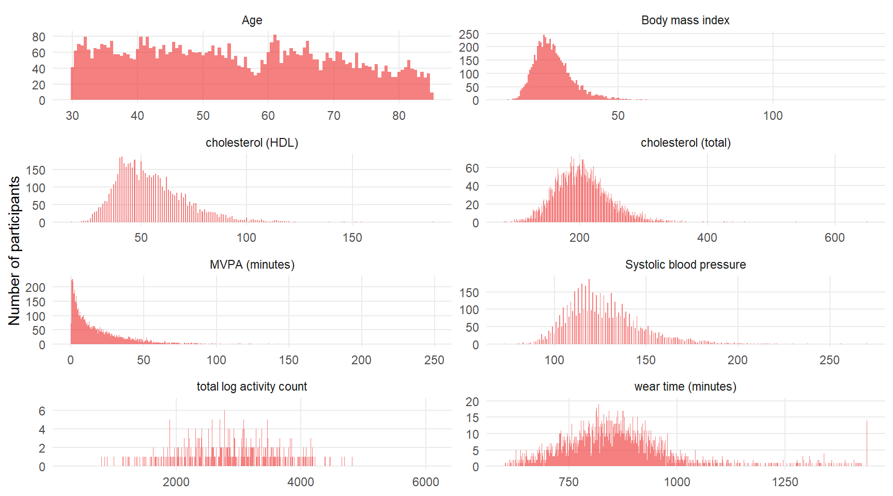

Chapter 12 Univariate distribution checks
This section reports a series of univariate summary checks of the NHANES dataset.
12.1 Data set overview
Using the Hmisc describe function, we provide an overview of the data set. The descriptive report also provides histograms of continuous variables. For ease of scanning the information, we group the report by measurement type.
12.1.1 Demographic and lifestyle variables
6 Variables 5972 Observations
ageyears

| n | missing | distinct | Info | Mean | Gmd | .05 | .10 | .25 | .50 | .75 | .90 | .95 |
|---|---|---|---|---|---|---|---|---|---|---|---|---|
| 5972 | 0 | 660 | 1 | 54.87 | 17.64 | 32.17 | 34.58 | 41.65 | 53.75 | 67.25 | 76.50 | 80.83 |
gender
| n | missing | distinct |
|---|---|---|
| 5972 | 0 | 2 |
Value Male Female Frequency 2935 3037 Proportion 0.491 0.509
educationadult: education level

| n | missing | distinct |
|---|---|---|
| 5968 | 4 | 3 |
Value Less than high school High school More than high school Frequency 1683 1448 2837 Proportion 0.282 0.243 0.475
bmi: body mass indexkg/m2

| n | missing | distinct | Info | Mean | Gmd | .05 | .10 | .25 | .50 | .75 | .90 | .95 |
|---|---|---|---|---|---|---|---|---|---|---|---|---|
| 5928 | 44 | 2161 | 1 | 29.07 | 6.804 | 20.78 | 22.12 | 24.73 | 28.08 | 32.23 | 37.07 | 40.80 |
smokecigs: smoking status

| n | missing | distinct |
|---|---|---|
| 5970 | 2 | 3 |
Value Never Former Current Frequency 2911 1759 1300 Proportion 0.488 0.295 0.218
alcohol: alcohol consumption

| n | missing | distinct | Info | Mean | Gmd |
|---|---|---|---|---|---|
| 5577 | 395 | 3 | 0.776 | 1.516 | 0.624 |
Value 1 2 3 Frequency 3090 2098 389 Proportion 0.554 0.376 0.070
12.1.2 Physiological measurements
3 Variables 5972 Observations
sys: Systolic blood pressuremg/dl

| n | missing | distinct | Info | Mean | Gmd | .05 | .10 | .25 | .50 | .75 | .90 | .95 |
|---|---|---|---|---|---|---|---|---|---|---|---|---|
| 5698 | 274 | 137 | 1 | 127.4 | 22.26 | 100.0 | 105.0 | 113.0 | 124.0 | 138.0 | 154.0 | 166.1 |
lbxtc: Total cholesterolmg/dl

| n | missing | distinct | Info | Mean | Gmd | .05 | .10 | .25 | .50 | .75 | .90 | .95 |
|---|---|---|---|---|---|---|---|---|---|---|---|---|
| 5742 | 230 | 264 | 1 | 204.1 | 46.4 | 143 | 155 | 175 | 201 | 228 | 258 | 277 |
lbdhdd: HDL cholesterolmg/dl

| n | missing | distinct | Info | Mean | Gmd | .05 | .10 | .25 | .50 | .75 | .90 | .95 |
|---|---|---|---|---|---|---|---|---|---|---|---|---|
| 5742 | 230 | 109 | 1 | 54.64 | 17.91 | 33 | 37 | 43 | 52 | 64 | 76 | 85 |
12.1.3 Comorbidities
4 Variables 5972 Observations
diabetes
| n | missing | distinct |
|---|---|---|
| 5972 | 0 | 2 |
Value No Yes Frequency 5214 758 Proportion 0.873 0.127
chf: congestive heart failure
| n | missing | distinct |
|---|---|---|
| 5972 | 0 | 2 |
Value No Yes Frequency 5739 233 Proportion 0.961 0.039
cancer
| n | missing | distinct |
|---|---|---|
| 5972 | 0 | 2 |
Value No Yes Frequency 5359 613 Proportion 0.897 0.103
stroke
| n | missing | distinct |
|---|---|---|
| 5972 | 0 | 2 |
Value No Yes Frequency 5734 238 Proportion 0.96 0.04
12.1.4 Physical activity variables
16 Variables 5972 Observations
tac: total activity counts per day

| n | missing | distinct | Info | Mean | Gmd | .05 | .10 | .25 | .50 | .75 | .90 | .95 |
|---|---|---|---|---|---|---|---|---|---|---|---|---|
| 5972 | 0 | 5965 | 1 | 244811 | 143738 | 69233 | 94872 | 150571 | 223572 | 314224 | 417410 | 486450 |
| lowest: | 8263.000 | 8931.833 | 12123.000 | 14642.000 | 15656.000 |
| highest: | 981517.167 | 986261.000 | 986593.800 | 1097823.500 | 1122542.600 |
tlac: total log activity count (log(1+activity))

| n | missing | distinct | Info | Mean | Gmd | .05 | .10 | .25 | .50 | .75 | .90 | .95 |
|---|---|---|---|---|---|---|---|---|---|---|---|---|
| 5972 | 0 | 5969 | 1 | 2900 | 873.5 | 1613 | 1900 | 2385 | 2911 | 3431 | 3877 | 4164 |
| lowest: | 313.0835 | 364.4561 | 400.8157 | 429.9288 | 466.0362 |
| highest: | 5436.1548 | 5492.5395 | 5588.3401 | 5655.4680 | 6122.6779 |
mvpa: Moderate or vigorous physical activityminutes

| n | missing | distinct | Info | Mean | Gmd | .05 | .10 | .25 | .50 | .75 | .90 | .95 |
|---|---|---|---|---|---|---|---|---|---|---|---|---|
| 5972 | 0 | 1163 | 1 | 19.19 | 20.9 | 0.800 | 1.429 | 4.000 | 12.000 | 26.762 | 46.000 | 59.921 |
| lowest: | 0.0000000 | 0.1428571 | 0.1666667 | 0.2000000 | 0.2500000 |
| highest: | 180.8333333 | 186.2000000 | 194.8000000 | 208.5000000 | 249.0000000 |
wt: total accelerometer wear timeminutes

| n | missing | distinct | Info | Mean | Gmd | .05 | .10 | .25 | .50 | .75 | .90 | .95 |
|---|---|---|---|---|---|---|---|---|---|---|---|---|
| 5972 | 0 | 3613 | 1 | 866.1 | 139.8 | 684.3 | 721.0 | 782.9 | 852.1 | 922.0 | 1000.6 | 1111.5 |
tlac.1: total log actvity count 12:00AM-2:00AM

| n | missing | distinct | Info | Mean | Gmd | .05 | .10 | .25 | .50 | .75 | .90 | .95 |
|---|---|---|---|---|---|---|---|---|---|---|---|---|
| 5972 | 0 | 2656 | 0.829 | 30.92 | 51.83 | 0.00 | 0.00 | 0.00 | 0.00 | 24.38 | 94.43 | 169.25 |
| lowest: | 0.0000000 | 0.1569446 | 0.1831020 | 0.2299197 | 0.2559656 |
| highest: | 597.3808309 | 620.0469233 | 674.1677375 | 709.3300116 | 719.0239316 |
tlac.2: total log actvity count 2:00AM-4:00AM

| n | missing | distinct | Info | Mean | Gmd | .05 | .10 | .25 | .50 | .75 | .90 | .95 |
|---|---|---|---|---|---|---|---|---|---|---|---|---|
| 5972 | 0 | 1770 | 0.653 | 19.09 | 34.47 | 0.00 | 0.00 | 0.00 | 0.00 | 2.91 | 51.83 | 110.64 |
| lowest: | 0.00000000 | 0.09902103 | 0.11552453 | 0.15694461 | 0.23104906 |
| highest: | 586.34967162 | 611.00545824 | 617.44773130 | 737.25383394 | 775.42871350 |
tlac.3: total log actvity count 4:00AM-6:00AM

| n | missing | distinct | Info | Mean | Gmd | .05 | .10 | .25 | .50 | .75 | .90 | .95 |
|---|---|---|---|---|---|---|---|---|---|---|---|---|
| 5972 | 0 | 2834 | 0.855 | 43.29 | 70.78 | 0.00 | 0.00 | 0.00 | 0.00 | 38.74 | 147.59 | 248.43 |
| lowest: | 0.0000000 | 0.1155245 | 0.1386294 | 0.2299197 | 0.2682397 |
| highest: | 679.1484297 | 697.1093552 | 704.5766819 | 719.3198459 | 769.6014301 |
tlac.4: total log actvity count 6:00AM-8:00AM

| n | missing | distinct | Info | Mean | Gmd | .05 | .10 | .25 | .50 | .75 | .90 | .95 |
|---|---|---|---|---|---|---|---|---|---|---|---|---|
| 5972 | 0 | 5285 | 0.998 | 177 | 178.6 | 0.00 | 0.00 | 36.94 | 137.34 | 282.09 | 416.35 | 496.25 |
| lowest: | 0.0000000 | 0.2299197 | 0.3465736 | 0.6148132 | 0.6839274 |
| highest: | 774.8811640 | 792.6938042 | 822.1482092 | 832.9933042 | 857.9018816 |
tlac.5: total log actvity count 8:00AM-10:00AM

| n | missing | distinct | Info | Mean | Gmd | .05 | .10 | .25 | .50 | .75 | .90 | .95 |
|---|---|---|---|---|---|---|---|---|---|---|---|---|
| 5972 | 0 | 5834 | 1 | 339.3 | 191.7 | 39.52 | 102.56 | 221.28 | 346.74 | 460.18 | 552.17 | 610.19 |
| lowest: | 0.0000000 | 0.2310491 | 0.7250248 | 0.8652549 | 1.0357837 |
| highest: | 812.0225306 | 812.8675420 | 813.2942210 | 824.5800445 | 888.1759271 |
tlac.6: total log actvity count 10:00AM-12:00PM

| n | missing | distinct | Info | Mean | Gmd | .05 | .10 | .25 | .50 | .75 | .90 | .95 |
|---|---|---|---|---|---|---|---|---|---|---|---|---|
| 5972 | 0 | 5931 | 1 | 407.7 | 163.6 | 150.4 | 218.6 | 316.2 | 415.0 | 506.7 | 589.9 | 634.9 |
| lowest: | 0.0000000 | 0.6986213 | 2.6001909 | 4.5903937 | 5.7234361 |
| highest: | 807.7712473 | 808.7247458 | 811.5701740 | 884.1169241 | 892.0314653 |
tlac.7: total log actvity count 12:00PM-2:00PM

| n | missing | distinct | Info | Mean | Gmd | .05 | .10 | .25 | .50 | .75 | .90 | .95 |
|---|---|---|---|---|---|---|---|---|---|---|---|---|
| 5972 | 0 | 5947 | 1 | 418 | 146.9 | 192.1 | 250.4 | 337.6 | 423.5 | 507.2 | 581.3 | 623.7 |
| lowest: | 0.000000 | 1.734669 | 2.704424 | 5.605670 | 6.387910 |
| highest: | 788.370472 | 796.082067 | 813.380498 | 821.733575 | 885.445891 |
tlac.8: total log actvity count 2:00PM-4:00PM

| n | missing | distinct | Info | Mean | Gmd | .05 | .10 | .25 | .50 | .75 | .90 | .95 |
|---|---|---|---|---|---|---|---|---|---|---|---|---|
| 5972 | 0 | 5954 | 1 | 411.7 | 147.8 | 192.1 | 243.1 | 323.6 | 414.3 | 501.7 | 577.5 | 619.9 |
| lowest: | 0.000000 | 1.974752 | 3.096473 | 4.094345 | 5.772020 |
| highest: | 792.683985 | 837.042353 | 846.553847 | 877.212734 | 904.872351 |
tlac.9: total log actvity count 4:00PM-6:00PM

| n | missing | distinct | Info | Mean | Gmd | .05 | .10 | .25 | .50 | .75 | .90 | .95 |
|---|---|---|---|---|---|---|---|---|---|---|---|---|
| 5972 | 0 | 5955 | 1 | 397 | 140.3 | 185.4 | 234.8 | 316.4 | 401.8 | 483.5 | 553.6 | 591.4 |
| lowest: | 0.000000 | 2.957040 | 3.401197 | 4.148165 | 5.084134 |
| highest: | 771.497952 | 783.128869 | 801.039991 | 809.429425 | 822.294800 |
tlac.10: total log actvity count 6:00PM-8:00PM

| n | missing | distinct | Info | Mean | Gmd | .05 | .10 | .25 | .50 | .75 | .90 | .95 |
|---|---|---|---|---|---|---|---|---|---|---|---|---|
| 5972 | 0 | 5932 | 1 | 337.6 | 151.3 | 114.1 | 165.5 | 246.6 | 339.5 | 433.1 | 504.4 | 548.9 |
| lowest: | 0.000000 | 1.311822 | 1.353699 | 1.753975 | 3.459493 |
| highest: | 778.168243 | 778.774433 | 802.020060 | 851.421446 | 860.123328 |
tlac.11: total log actvity count 8:00PM-10:00PM

| n | missing | distinct | Info | Mean | Gmd | .05 | .10 | .25 | .50 | .75 | .90 | .95 |
|---|---|---|---|---|---|---|---|---|---|---|---|---|
| 5972 | 0 | 5786 | 1 | 223.2 | 158.2 | 10.22 | 42.32 | 116.77 | 212.72 | 315.90 | 411.75 | 471.84 |
| lowest: | 0.0000000 | 0.6229449 | 0.6708919 | 1.0233141 | 1.0525597 |
| highest: | 724.9040071 | 753.8848070 | 821.4989318 | 826.3463412 | 839.8942777 |
tlac.12: total log actvity count 10:00PM-12:00AM

n missing distinct Info Mean Gmd .05 .10 .25
5972 0 4943 0.995 95.37 114.3 0.000 0.000 6.693
.50 .75 .90 .95
55.438 141.863 251.308 328.945
| lowest: | 0.00000000 | 0.09902103 | 0.17328680 | 0.27798716 | 0.41291025 |
| highest: | 683.58618305 | 698.46723961 | 702.66304648 | 707.15487443 | 733.61717206 |
12.2 Categorical variables
We now provide a closer visual examination of the categorical predictors.

12.3 Continuous variables
A closer visual examination of continuous predictors and the outcome variable.

There is evidence of influential points in some of the distributions. This is explored further with targeted summaries. A more detailed univariate summaries for the variables of interest are also provided below.

12.3.3 Body mass index
Figure 7.2: Distribution of respiratory rate
There is a participant with an unusual high value (130.2). It is possible that this is an entry error (bmi=30.2).
12.3.4 Outcome= Time of moderate or vigrous physical activity and related variables
Figure 7.3: Distribution of time of moderate/vigorous activity [minutes]
After transforming MVPA with \(\log_{10}(x+1)\):

Figure 7.4: Distribution of log10 (1+MVPA)
![Distribution of wear time [minutes]](nhanes_univar_files/figure-html/unnamed-chunk-8-1.png)
Figure 7.5: Distribution of wear time [minutes]

Figure 7.6: Distribution of log total activity count
12.4 Section session info
## R version 4.1.3 (2022-03-10)
## Platform: x86_64-w64-mingw32/x64 (64-bit)
## Running under: Windows 10 x64 (build 17763)
##
## Matrix products: default
##
## locale:
## [1] LC_COLLATE=English_Austria.1252 LC_CTYPE=English_Austria.1252
## [3] LC_MONETARY=English_Austria.1252 LC_NUMERIC=C
## [5] LC_TIME=English_Austria.1252
##
## attached base packages:
## [1] stats graphics grDevices utils datasets methods base
##
## other attached packages:
## [1] Hmisc_4.6-0 Formula_1.2-4 survival_3.2-13 lattice_0.20-45
## [5] forcats_0.5.1 stringr_1.4.0 dplyr_1.0.8 purrr_0.3.4
## [9] readr_2.1.2 tidyr_1.2.0 tibble_3.1.6 ggplot2_3.3.5
## [13] tidyverse_1.3.1 here_1.0.1
##
## loaded via a namespace (and not attached):
## [1] fs_1.5.2 lubridate_1.8.0 RColorBrewer_1.1-2
## [4] httr_1.4.2 rprojroot_2.0.2 tools_4.1.3
## [7] backports_1.4.1 bslib_0.3.1 utf8_1.2.2
## [10] R6_2.5.1 rpart_4.1.16 DBI_1.1.2
## [13] colorspace_2.0-3 nnet_7.3-17 withr_2.5.0
## [16] tidyselect_1.1.2 gridExtra_2.3 compiler_4.1.3
## [19] cli_3.2.0 rvest_1.0.2 htmlTable_2.4.0
## [22] xml2_1.3.3 labeling_0.4.2 bookdown_0.25
## [25] sass_0.4.1 scales_1.1.1 checkmate_2.0.0
## [28] digest_0.6.29 foreign_0.8-82 rmarkdown_2.13
## [31] base64enc_0.1-3 jpeg_0.1-9 pkgconfig_2.0.3
## [34] htmltools_0.5.2 highr_0.9 dbplyr_2.1.1
## [37] fastmap_1.1.0 htmlwidgets_1.5.4 rlang_1.0.2
## [40] readxl_1.3.1 rstudioapi_0.13 jquerylib_0.1.4
## [43] generics_0.1.2 farver_2.1.0 jsonlite_1.8.0
## [46] magrittr_2.0.2 patchwork_1.1.1 Matrix_1.4-0
## [49] Rcpp_1.0.8.3 munsell_0.5.0 fansi_1.0.3
## [52] lifecycle_1.0.1 stringi_1.7.6 yaml_2.3.5
## [55] grid_4.1.3 crayon_1.5.1 haven_2.4.3
## [58] splines_4.1.3 hms_1.1.1 knitr_1.38
## [61] pillar_1.7.0 reprex_2.0.1 glue_1.6.2
## [64] evaluate_0.15 latticeExtra_0.6-29 data.table_1.14.2
## [67] modelr_0.1.8 png_0.1-7 vctrs_0.3.8
## [70] tzdb_0.2.0 cellranger_1.1.0 gtable_0.3.0
## [73] assertthat_0.2.1 xfun_0.30 broom_0.7.12
## [76] cluster_2.1.2 ellipsis_0.3.2